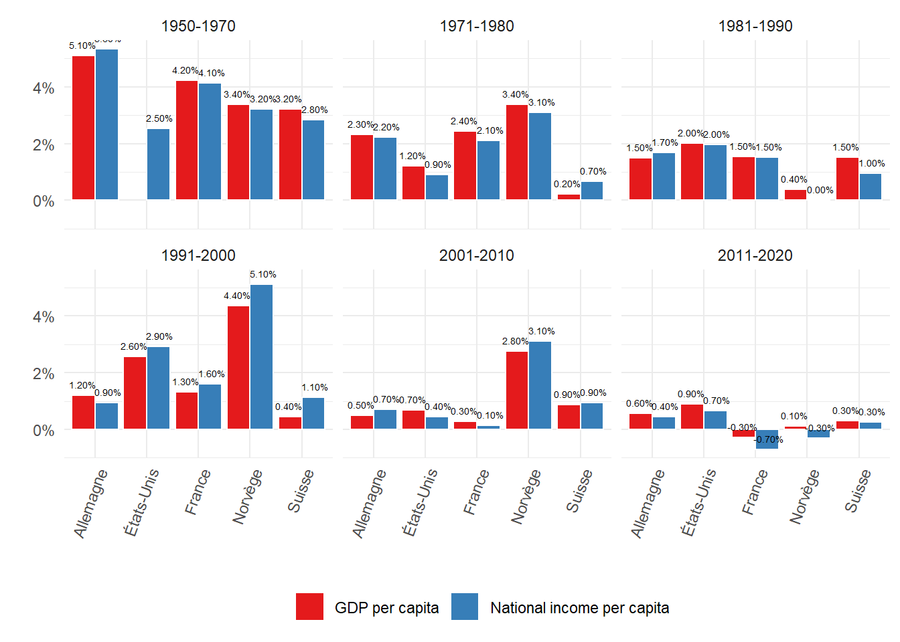
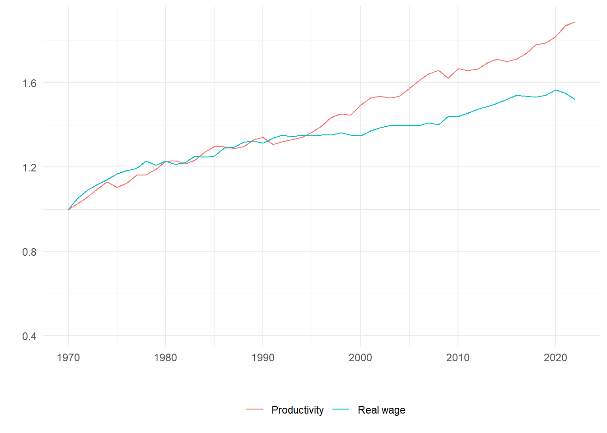
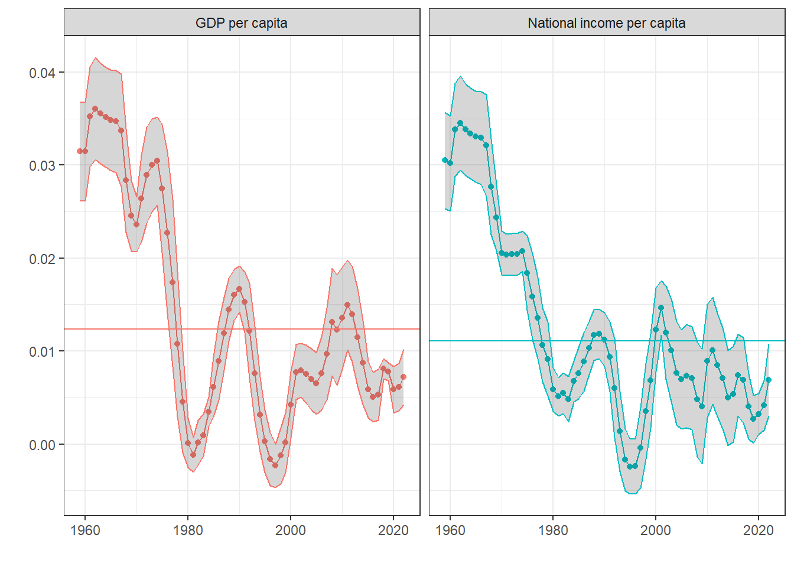

In the last years, recurring debates are emerging in Switzerland regarding the future of the country’s socio-economic model, showing a rising concern of the Swiss elites for their country’s economic performance. One of the most growing debates is about economic growth: does Switzerland, as in other Western countries, suffer from economic slow-down, or even stagnation ? This was suggested by an article published in 2022 in the renown Swiss-German newspaper Neue Zürcher Zeitung. This article, written by Thomas Fuster and entitled “Immigration: The Swiss economy is primarily growing extensively” argued that the Swiss economy is solely growing “extensively”, that is, only thanks to demographic growth and hence immigration. While economic growth, measured by the famous gross domestic product (GDP) indicator, is still growing due to immigration, gdp per capita growth remains near-stagnant because of the decline in productivity growth. This article provoked heated reactions among the neoliberal think thank Avenir Suisse and the business interest association EconomieSuisse, which responded through a series of articles offering an overview and a discussion of the performance of the Swiss economy in the last decades. Both EconomieSuisse and Avenir Suisse were eager to prove that Switzerland’s economy is resilient, that intensive growth based on productivity gains is still a fact, and that the country still holds its privileged position as the so-called Swiss miracle.
EconomieSuisse’s argument and empirical evidence (Minsch 2023) are first based on a graph showing the evolution of Switzerland’s real gdp per capita growth in international comparison. The graph shows that Swiss gdp per capita is well advanced compared to other Western countries such as the US, Germany or France, and continues to grow despite its advanced level. However there are several issues with EconomieSuisse’s figure. First, the choice of the countries which are compared to Switzerland biases the advance of the Swiss real gdp per capita. Second, the choice of the time interval (from 1970-2022) also overstates the advance of the Swiss economy. Using data offering a longer time frame (going back to 1950) and including other countries, one can arrive at totally different conclusions from what is shown by EconomieSuisse.
Figure 1 shows the evolution of the Swiss real gdp per capita at purchasing power parities (ppp) compared to a sample of Western countries, using high-quality data provided by the World Inequality Database (WID). One can see that Switzerland’s gdp per capita was indeed well in advance compared to other Western countries in the post-war period. However, starting from the 1970s, gdp per capita growth has slowed down in Switzerland, and the difference with other countries is gradually getting smaller. Contrary to what is argued by EconomieSuisse, Switzerland has even been caught up and surpassed by Norway which is, interestingly, not taken into account in EconomieSuisse’s article, showing that the lobby has carefully chosen the countries for the comparison. Norway’s growth has been particularly impressive and the country would have surpassed Switzerland shortly after 2008 if the Great Recession did not happen. Moreover, The United States are now very close to Switzerland, at least when we take a longer historical perspective.
Another issue of the debate about Switzerland’s economic growth is the excessive focus on GDP as an indicator of a country’s economic wealth and performance. In that matter, other indicators such as national income1 also deserves close attention.
Figure 2 puts even more into question the discourse elaborated by EconomieSuisse. In terms of average national income, Switzerland has been caught up and surpassed Norway and the United States since the 2008 crisis. Other countries such as Denmark are also getting closer to Switzerland.
Looking at Figure 2 and Figure 1, one can identify different growth periods of the Swiss economy. The first period, ranging from 1950 to 1970, corresponds to sustained high growth of gdp and national income per capita. The compound average rates of growth were 3.2% for GDP per capita and 2.8% for national income per capita Figure 3. Few studies have conducted a detailed analysis of Switzerland’s growth regime during this period. Post-war studies of the so-called “Trentes Glorieuses” generally emphasized a catching-up effect, but Switzerland was not, or at least very little, impacted by the destructive consequences of WWII. Other explanations, which focused not so much on small countries like Switzerland, but on larger economies such as France and the US, explain post-WWII growth through the constitution of a new accumulation regime, the Fordist regime, based on a virtuous cycle of production and mass consumption. The institution which laid the foundations of this Fordist regime was a wage-labour nexus based on productivity gainsharing (Boyer 2022, 62). However, whether Switzerland’s post-WWII growth regime was Fordist as in the US or France deserves more investigation. Switzerland is a highly decentralized country, and Fordist institutions require a certain degree of government intervention. Contrary to most Western countries during the Trentes Glorieuses, Switzerland never implemented active Keynesian macroeconomic management through fiscal and monetary policies, which remained constrained during the period.
One could argue that Switzerland’s post-war regime had its own national peculiarities which helped real wages to grow with productivity and thus sustain a Fordist accumulation regime. A first characteristic is the importance of the labour collective agreements regulating industrial relations. A second factor were full-employment and the structural labour shortage which induced Switzerland to extensively rely on immigration as a reserve of labour supply. These factors surely helped Switzerland to have its own Fordist growth regime.

The second growth period, ranging from 1971 to 1980, marked the end of the post-war sustained high growth regime. The average growth rates for this period fell to 0.2% for GDP and 0.7% for national income per capita. The 70s were thus a deep period of economic crisis and stagnation, both in Switzerland and at the international level. According to the Régulation school, the 70s marked the end of the Fordist accumulation regime. But the disintegration of the latter is not only the result international events such as the Oil shocks (1973, 1979), but suffered from internal contradictions (as does each regime). Boyer (2022) identifies several sources of crisis of the Fordist regime: (1) the end of productivity gains associated with Fordist production methods; (2) full-employment which induce more indexation of wages to productivity gains, which can provoke instability because of factor (1).

Unfortunately, data on productivity are not available for Switzerland before the 70s, but one can still have a look at the co-evolution with real wage since the 70s. Figure 4 shows that real wage and productivity were still growing together after the 70s and 80s, but that a “decoupling” between the two happened during the 90s, which are often characterized as a period of wage moderation.

Finally, Figure 5 shows an estimated growth trend of the Swiss real gdp and national income per capita over the period 1950-2022. The overall rates of growth are respectively 1.2380011% for gdp and 1.1079029% for national income. We can see that the Swiss economy was growing at a rate higher than its overall average until the 70s. Since the 70s, the rate of growth of the Swiss economy follows a downwards trend.
No matter how Switzerland’s post-war growth regime is characterized, it is clear that the country’s economy lost its dynamics during the 70s. During the 80s, the average rates of growth increased slightly to 1.5% and 1%. However, the tendency shows a downwards pattern and the average rates of growth are consistently around or below 1% since the 70s.
In conclusion, if Switzerland shows a clear economic slow-down and tendancy towards stagnation, the situation is not catastrophic either. EconomieSuisse clearly exaggerates the economic performance and advance of Switzerland, while NZZ’s article argument of a non-growing Swiss economy does not hold, because, as we have seen, Switzerland’s GDP and national income per capita are still growing, although at very slow and below long-run average rates. Switzerland’s economy, and more particularly, the country’s evolution in terms of growth and demand regimes needs closer examination. It is disappointing that Switzerland is often overlooked in macroeconomic studies, whether they are from the post-Keynesian or neoclassical schools, and research on Swiss growth regimes and macroeconomic dynamics is yet to be done.
References
Boyer, Robert. 2022. Political Economy of Capitalisms. Translated by Froane Miller Roger. 1st ed. Palgrave Macmillan. http://gen.lib.rus.ec/book/index.php?md5=314C8D10360339A0BE2ACC0D116FCB83.
Minsch, Rudolf. 2023. “La croissance suisse est-elle avant tout quantitative ? EconomieSuisse.” 2023. https://www.economiesuisse.ch/fr/articles/la-croissance-economique-suisse-reste-fragile.
Footnotes
National income is defined as GDP minus depreciation of capital and plus net foreign income earned by residents in the rest of the world.↩︎